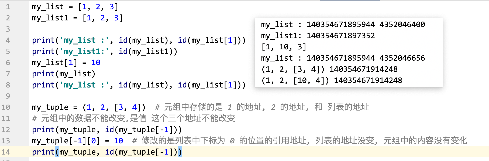

x
# 通过 input输入3个人信息，每个人有姓名和年龄，将信息存入字典中，并将将字典存入列表。# 遍历列表，打印每个人的信息，打印格式如下：# 张三 20# 李四 22# 王五 231. 输入三个人的信息 (输入 input('提示信息') 可以考虑使用 循环)2. 每个人有姓名和年龄, (都需要使用 input 输入, 一次循环两个 input) 3. 将姓名和年龄信息存入字典中 {"name": xxx, "age": xxx}/ {输入的姓名: 年龄}4. 并将将字典存入列表。 列表.append(数据) xxxxxxxxxx# my_list = []## for i in range(3):# my_dict = {} # 每循环一次创建一个字典# name = input('请输入姓名:')# age = input('请输入年龄:')# my_dict['name'] = name# my_dict['age'] = age# my_list.append(my_dict)## # 遍历列表, 列表中存的都是字典, 所以 item 是字典# for item in my_list: # item 是字典# print(item['name'], item['age']) # 根据字典的 key 获取 value## my_list = [{'id': 1,'money': 10}, {'id': 2, 'money': 20},# {'id': 3, 'money': 30}, {'id': 4, 'money': 40}]## def func():# for i in my_list: # i 变量, 字典类型# # 1. 如果字典中 ID 的值为奇数,则对 money 的值加 20# if i.get('id') % 2 == 1:# i['money'] = i.get('money') + 20# # 2. 如果字典中 ID 的值为偶数, 则对 money 的值加 10# else:# i['money'] = i.get('money') + 10## # 3. 打印输出列表,查看最终的结果# print(my_list)## func()my_dict = {'登录': [{'desc': '正确的用户名密码', 'username': 'admin', 'password': '123456', 'expect': '登录成功'}, {'desc': '错误的用户名', 'username': 'root', 'password': '123456', 'expect': '登录失败'}, {'desc': '错误的密码', 'username': 'admin', 'password': '123123', 'expect': '登录失败'}, {'desc': '错误的用户名和密码', 'username': 'aaaa', 'password': '123123', 'expect': '登录失败'}], '注册': [{'desc': '注册1', 'username': 'abcd', 'password': '123456'}, {'desc': '注册1', 'username': 'xyz', 'password': '123456'}]}# 1. 自定义以程序, 实现如下要求# 2. 能够获取测试人员输入的信息(登录/测试)opt = input('请输入要获取的数据(登录/注册) :')info_list = []if opt == '登录': print('获取登录数据') for d in my_dict.get('登录'): # d 字典类型 # 需要将数据组成元组类型(定义元组) my_tuple = (d.get('username'), d.get('password'), d.get('expect')) # 需要将元组添加到列表中 append() info_list.append(my_tuple)elif opt == '注册': print('获取注册数据') for d in my_dict.get('注册'): my_tuple = (d.get('username'), d.get('password')) info_list.append(my_tuple)else: print('输入错误')print(info_list)
x
列表去重:列表中存在多个数据, 需求, 去除列表中重复的数据.方式1. 思路遍历原列表中的数据判断在新列表中是否存在, 如果存在,不管, 如果不存在放入新的列表中遍历: for 循环实现判断是否存在: 可以 使用 in 存入数据: append()方法 2: 在 Python 中还有一种数据类型(容器) ,称为是 集合(set)特点: 集合中不能有重复的数据(如果有重复的数据会自动去重)可以使用集合的特点对列表去重1. 使用 set() 类型转换将列表转换为 集合类型2. 再使用 list() 类型转换将集合 转换为列表缺点: 不能保证数据在原列表中出现的顺序(一般来说,也不考虑这件事)my_list = [3, 2, 4, 1, 2, 3, 3, 2, 1, 2, 3, 1]# print(list(set(my_list)))## new_list = list(set(my_list))# print(new_list)new_list = []# for i in my_list:# # 判断新列表中是否存在 i# if i in new_list:# # 存在# pass # continue# else:# new_list.append(i)for i in my_list: if i not in new_list: new_list.append(i)print(new_list)
xxxxxxxxxx# 1. 定义一个函数, my_sum ,对两个数字进行求和计算.def my_sum(): num1 = 10 num2 = 20 num = num1 + num2 print(num)my_sum()# 函数存在的问题, 这个函数只能对 10 和 20 进行求和, 不能对任意的函数进行求和计算.# 问题的解决: 想要解决这个问题,可以使用函数参数来解决函数参数: 在函数定义的时候,使用变量代替具体的数据值(进行占位), 在函数调用的时候 , 传递具体的数据值.好处: 让函数更加通用,能够解决以类问题, 而不是单纯的一个 掌握理解 形参和实参的概念
x
函数的返回值,可以理解为是 函数整体执行的结果是什么什么上班需要书写返回值: 函数中得到的数据在后续的代码中还要使用,这个时候就应该将这个数据作为返回值返回,以供后续使用print() ---> Noneinput() ---> 键盘输入的内容type() ---> 类型len() ---> 数据的长度(元素的个数)在函数中想要将一个数据作为返回值 返回, 需要使用 return 关键字(只能在函数中使用)作用: 1. 将数据值作为返回值返回2. 函数代码执行遇到 return, 会结束函数的执行x
def my_sum(a, b): num = a + b # print(num) # 代码中没有返回值,只有 print,这个结果只能在函数中用一次,不能后续使用 # 我们想要将这个求和的结果 在后续的代码中使用, 需要使用 return 将求和的结果进行返回 return num # 将这个结果返回到调用的地方法 # return 之后的代码会执行吗 print('我是 return 之后的代码, 我会执行吗---> 不会执行')# 1. 函数中没有 print, 只有 return, 想要查看结果,需要在调用的时候使用 printprint(my_sum(1, 2))# 2, 想要将函数中返回的结果,在后续代码中使用, 即需要将这个数据保存下来, 需要使用变量来接收(保存) 函数的返回值(执行结果)# 变量 = 函数()result = my_sum(10, 20) # 将求和的结果保存到变量 result 中, 可以在后续代码中使用print('使用: 1, 直接打印: ', result)print('使用: 2, 对数字 加 10:', result + 10)
返回值的说明
x
def 函数名(): # 返回值 None pass # 代码中没有 return def 函数名(): return # return 后边没有数据, 返回值 Nonedef 函数名(): return xx # 返回值是 xx
xxxxxxxxxx在这一部分 我们了解 Python 底层是如何处理数据的x
1. 在定义变量的时候 变量 = 数据值, Python 解释器会在内存中开辟两块空间2. 变量和数据都有自己的空间3. 日常简单理解, 将数据保存到变量的内存中, 本质是 将 数据的地址保存到变量对应的内存中4. 变量中存储数据地址的行为 就是引用 (变量引用了数据的地址, 简单说就是变量中存储数据), 存储的地址称为 引用地址5. 可以使用 id() 来获取变量中的引用地址(即数据的地址), 如果两个变量的 id() 获取的引用地址一样, 即代表着, 两个变量引用了同一个数据,是同一个数据6. 只有 赋值运算符=, 可以改变变量的引用(等号左边数据的引用)7. python 中数据的传递,都是传递的引用x
数据类型: int float bool str list tuple dict set可变不可变是指: 数据所在的内存是否允许修改, 允许修改就是可变类型, 不允许修改就是不可变类型(不使用=, 变量引用的数据中的内容是否会变化,会变化是可变的, 不会变化是不可变的)可变类型: 列表 list, 字典 dict, 集合 set 列表.append() 字典.pop(键)不可变类型:int float bool str tuple 
x
def func(list1): list1.append(10) my_list = [1, 2]func(my_list)print(my_list)① [1, 2] ② [1, 2, 10]def func(list1): list1[0] = 10 my_list = [1, 2]func(my_list)print(my_list)① [1, 2] ②[10, 2]x
def func(list1): list1 = [2, 1] my_list = [1, 2]func(my_list)print(my_list)① [1, 2] ②[2, 1]xxxxxxxxxx1. 只有 = , 可以改变引用2. 可变类型做参数, 在函数内部, 如果不使用 = 直接修改形参的引用, 对形参进行的数据修改 会同步到实参中
xxxxxxxxxx对于列表来说, += 的本质是 extend 操作x
def func(list1): list1 += [1, 2] my_list = ['a', 'b']func(my_list)print(my_list) ===> ?① ['a', 'b'] ② ['a', 'b', 1, 2] x
a = 10b = 20# 方法一: 常规方法 引入第三个变量# c = a # 将 变量 a 中的值先保存起来 10# a = b # 将变量 b 中的值 给 a# b = c # 将变量 c中的值(即最开始 a 的值) 10 给 b# print(a, b)# 方法二, 不使用第三个变量, 使用数学中的方法# a = a + b # a 的值 30# b = a - b # 30 - 20 ===> 10# a = a - b # 30 - 10 ===> 20# print(a, b)# 方法三, 重点掌握, Python 特有a, b = b, aprint(a, b)
xxxxxxxxxx组包(pack): 将多个数据值使用逗号连接, 组成元组拆包(unpack): 将容器中的数据值使用多个变量分别保存的过程,注意: 变量的个数和容器中数据的个数要保持一致赋值运算符, 都是先执行等号右边的代码, 执行的结果,保存到等号左边的变量中x
# 组包c = b, a # 组包print(type(c), c) # <class 'tuple'> (10, 20)# 拆包a, b = cprint(a, b)x, y, z = [1, 2, 3]print(x, y, z)
xxxxxxxxxx变量: 根据变量的定义位置, 可以将变量分为局部变量和全局变量,xxxxxxxxxx局部变量: 在函数内部(函数的缩进中)定义的变量,称为是局部变量特点:1. 局部变量只能在当前函数内部使用, 不能在其他函数和函数外部使用2. 在不同函数中,可以定义名字相同的局部变量, 两者之间没有影响3. 生存周期(生命周期, 作用范围)--> 在哪 能用在函数被调用的时候,局部变量被创建, 函数调用结束, 局部变量的值被销毁(删除), 不能使用所以函数中的局部变量的值, 如果想要在函数外部使用, 需要使用 return 关键字, 将这个值进行返回xxxxxxxxxxdef func1(): num = 10 # num 就是局部变量 print(f"func1 函数中 {num}")def func2(): num = 100 # 可以在不同函数中定义名字相同的局部变量,没有影响 print(f"func2 函数中 {num}")func1() # 10func2() # 100func1() # 10
xxxxxxxxxx定义位置: 在函数外部定义的变量, 称为是 全局变量特点: 1. 可以在任何函数中读取(获取) 全局变量的值2. 如何在函数中存在和全局变量名字相同的局部变量, 在函数中使用的是 局部变量的值(就近)3. 在函数内部想要修改全局变量的引用(数据值), 需要添加 global 关键字, 对变量进行声明为全局变量4. 生命周期代码执行的时候被创建, 代码执行结束,被销毁(删除)xxxxxxxxxxg_num = 10 # 全局变量def func1(): print(f'func1 中 {g_num}') # 在函数中可以读取全局变量的值def func2(): g_num = 20 # 定义局部变量, 不会影响全局变量 print(f'func2 中 {g_num}')def func3(): global g_num # 这个函数中使用的 g_num 都是全局变量, 写在函数的第一行 g_num = 30 # 修改了全局变量 print(f'func3 中 {g_num}')# func1() # 10# func2() # 20# func1() # 10# func3() # 30# func1() # 30print(g_num)xxxxxxxxxx函数中想要返回一个数据值, 使用 return 关键字将 多个数据值组成容器进行返回, 一般是元组(组包)xxxxxxxxxxdef calc(a, b): num = a + b num1 = a - b return num, num1# 写法一result = calc(10, 5)print(result, result[0], result[1])# 写法二, 直接拆包x, y = calc(20, 10)print(x, y)
xxxxxxxxxx形参的不同书写方法位置传参:
xxxxxxxxxx在函数调用的时候, 按照形参的顺序, 将实参值传递给形参关键字传参
xxxxxxxxxx在函数调用的时候, 指定数据值给到那个形参混合使用
xxxxxxxxxx1. 关键字传参必须写在位置传参的后面2. 不要给一个形参传递多个数据值xxxxxxxxxxdef func(a, b, c): print(f'a: {a}, b: {b}, c: {c}')# 位置传参func(1, 2, 3)# 关键字传参func(a=2, b=3, c=1)# 混合使用func(1, 3, c=5)xxxxxxxxxx缺省参数, 默认参数列表.pop() # 不写参数,删除最后一个列表.sort(reverse=True)1. 定义方式在函数定义的时候, 给形参一个默认的数据值, 这个形参就变为缺省参数, 注意, 缺省参数的书写要放在普通参数的后边2. 特点(好处)缺省参数, 在函数调用的时候, 可以传递实参值, 也可以不传递实参值如果传参,使用的就是传递的实参值, 如果不传参,使用的就是默认值
xxxxxxxxxxdef show_info(name, sex='保密'): print(name, sex)show_info('小王')show_info('小王', '男')
x
print(1)print(1, 2)print(1, 2, 3)print(1, 2, 3, 4)xxxxxxxxxx当我们在书写函数的时候, 不确定参数的具体个数时, 可以使用 不定长参数不定长位置参数(不定长元组参数)
x
1. 书写, 在普通参数的前边,加上一个 *, 这个参数就变为不定长位置参数2. 特点, 这个形参可以接收任意多个 位置传参的数据3. 数据类型, 形参的类型是 元组4. 注意, 不定长位置参数 要写在普通的参数的后面5, 一般写法, 不定长位置参数的名字为 args, 即(*args) # arguments
不定长关键字参数(不定长字典参数)
xxxxxxxxxx1. 书写, 在普通参数的前边,加上 两个 *, 这个参数就变为不定长关键字参数2. 特点, 这个形参可以接收任意多个 关键字传参的数据3. 数据类型, 形参的类型是 字典4, 注意, 不定长关键字参数,要写在所有参数的最后边5, 一般写法, 不定长关键字参数的名字为 kwargs, 即(**kwargs), keyword arguments完整的参数顺序
xxxxxxxxxxdef 函数名(普通函数, *args, 缺省参数, **kwargs): pass # 一般在使用的时候, 使用 1-2种, 按照这个顺序挑选书写即可xxxxxxxxxxdef func(*args, **kwargs): print(type(args), args) print(type(kwargs), kwargs) print('-' * 30)func()func(1, 2, 3) # 位置传参, 数据都给 argsfunc(a=1, b=2, c=3) # 关键字传参, 数据都给 kwargsfunc(1, 2, 3, a=4, b=5, c=6)
xxxxxxxxxx# print()# sep=' ', 多个位置参数之间的间隔# end='\n' 每一个 print 函数结束, 都会打印的内容 结束符print(1, end=' ')print(2, end=' ')print(3)print(1, 2, 3, 4, 5, 6, sep='_')print(1, 2, 3, 4, 5, 6, sep='_*_')